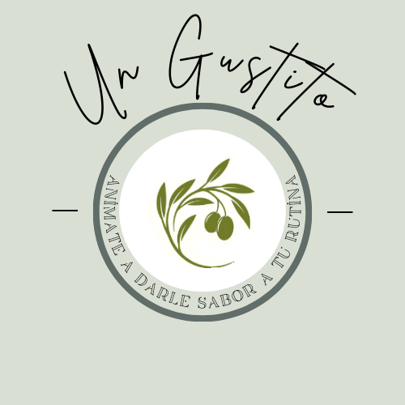
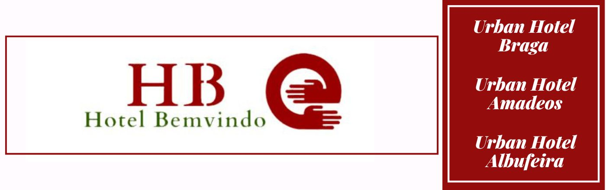

Un recorrido diferente
Si bien mi primer emprendimiento fue vender anotadores creados con papeles de colores que conseguia reciclando exedente de una imprenta, este E-Commers (JYM) que comence en 2016 fue el que me abrio la puerta a un mundo distnto donde aprendi desde informatica a tecnicas de comercio online e marketing. En el 2016 comienzo a comercializar vidrios templados para telefonos mobiles via Facebook, lo que poco a poco me llevo a tocar puertas de proveedores consiguiendo asi llegar a tener una variedad de productos que cubria una amplia gama de necesidades y publicos, los articulos para el hogar, seguridad, informatica y telefonia; Eran los mas confiables para poder vender y entregar puerta a puerta o en puntos seguros. La gestion de los envios fue por cuenta propia y en ocaciones contratando servicios como Rappi como socio para poder hacer las entregas. EN 2018 incorpore a un tecnico especializado en telefonia generando ingresos extras por reparaciones e asesoramiento comercial que derivaban en ventas de equipos. En la actualidad producto de mi salida de Argentina la tienda esta cerrada.
Con el exito de las ventas online y la logistica creada para la misma, se creo Un Gustito esta tienda online dedicada a la venta de aceite de oliva, olivas en 2 variedades y 3 formatos de tamaño diferentes. Si bien el E-commers era gerenciado por mi persona la propiedad de esta tienda era de un tercero Maria Carignani. Para esta etapa mi nivel de edicion y diseño grafico era lo suficientemente abarcativa como para poder editar contenido para las redes (post, reels, historias) de forma activa con productos fisicos y con un calendario posteo ordenado. Herramientas como Canva,Filmora, Adobe Audition, Adobe Photoshop fueron esenciales.
 En el año 2023 decido emigrar a Portugal pero antes tuve un breve paso por Barcelona para poder asistir a la cafeteria que estaba emplazando un familiar en la ciudad, mi trabajo en este local se centro en diseñar el logo, carteleria, menus, elementos graficos para redes e videos para el local. Este fue un desafio importante puesto que era un rubro distinto, debo decir que la tarea se completo satifactoriamente.
En el año 2023 decido emigrar a Portugal pero antes tuve un breve paso por Barcelona para poder asistir a la cafeteria que estaba emplazando un familiar en la ciudad, mi trabajo en este local se centro en diseñar el logo, carteleria, menus, elementos graficos para redes e videos para el local. Este fue un desafio importante puesto que era un rubro distinto, debo decir que la tarea se completo satifactoriamente.
 Finalmente en Mayo de ese año me mude a Braga, Portugal; Donde fui contratado para Pateos da Foz como Tecnico Informatico e luego en Octubre de ese año fui trasladado a Hotel Bemvindo quien gerenciaba hasta el momento los hoteles Urban Amadeos, Estacion y Albufeira. En este lugar tuve la grata tarea de diseñar las web urbanhotel.pt, urbanauto.pt y bemvindo.pt. A la vez administre las camapañas y cuentas de Google (Ads, Analitycs,Hotels), Meta Bussines, Instagram, Youtube, Tik Tok. Por otro lado brinde soporte tecnico a los hoteles en cuestiones como redes, equipamentos, gestion de datos. Tambien debo destacar que en dicho trabajo aprendi sobre gestion de PMS, sistemas de reserva hotelera como New Hotels, E-gds e Site Minder. Como asi colabore con contactas proveedores de servicios informaticos para proyectos de la empresa. En Junio de 2023 termino mi contrato por extincion de puesto de trabajo por lo que parti en busqueda de nuevos horizontes con una experiencia muy valorable.
Si bien mis formaciones son online en el area TI e Marketing tienen conocimientos solidos y muy vigentes en el mercado laboral basado esto siempre en la experiencia. Hoy es por momentos mas importante el saber usar las herramientas adecuadas en el momento preciso antes que una titulacion carente de practica. Siempre e buscado la mixtura y el equilibrio entre ambos mundos, esto tiene una importancia superlativa ahora que la inteligencia artificial puede ayudar a articular la necesidad y con el conocimiento con un nivel de eficiencia aun mayor si se la sabe emplear, esto ultimo narrado a mi me ayudo a aprender derrallo web (con y sin codigo), bases de datos con Sql y desarrollo de apps atravez de servicios como Google AppSheet, con esta ultima cree por ejemlo pronto e limpio una app que organiza la limpieza en apartamento incorporando usuarios, tablas excel e registros con codigo qr (se puede pedir acceso para conocerla).